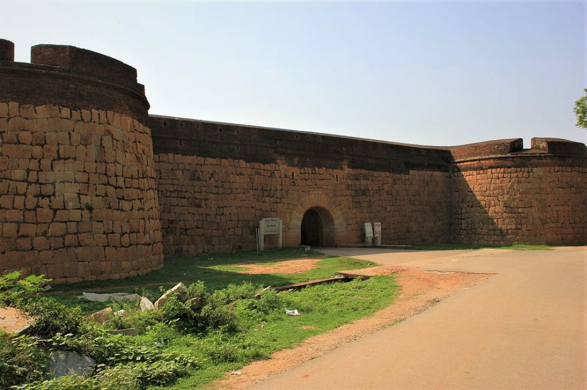

Welcome to Devanahalli

• Devanahalli Fort is located 35 kilometers (22 mi) north of Bangalore city, at Devanahalli in the State of Karnataka, India. Chieftain Malla Byre Gowda of Avathi, a Vijayanagara empire vassal, built a mud fort in c. 1501 at Devanadoddi (now called Devanahalli). In the late 18th century, Hyder Ali re-constructed the fort in stone resulting in the current structure.
• It was originally built in 1501 by Mallabairegowda, which remained in the hands of his descendants until the mid–eighteenth century. In 1749, the then Dalwai of Mysore, Nanjarajaiah, attacked the fort and occupied it. Later, the fort passed into the hands of Hyder Ali and subsequently Tipu Sultan. In 1791, Lord Cornwallis laid siege to the fort and took possession during the Anglo-Mysore War.
• The birthplace of Tipu Sultan, also known as Tiger of Mysore, is located near to the fort.[5] The fort is situated on the side of National Highway 7, near the Bengaluru International Airport.
• An Archaeological Survey of India (ASI) board outside the fort and at Tipu Sultan's birthplace declares them to be protected monuments.
• This place is good for a family trip.
• As it is not that from Bengaluru, it is suggested that you travel by road.
• While most people know about Bengaluru Fort, very few make the trip outside Bengaluru to visit the spectacular Devanahalli Fort. Unlike Bengaluru Fort, most of it still remains and is one of the top historical places near Bengaluru.